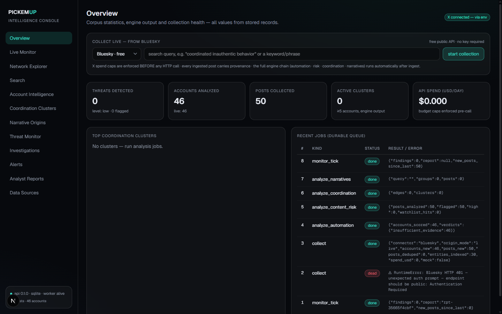
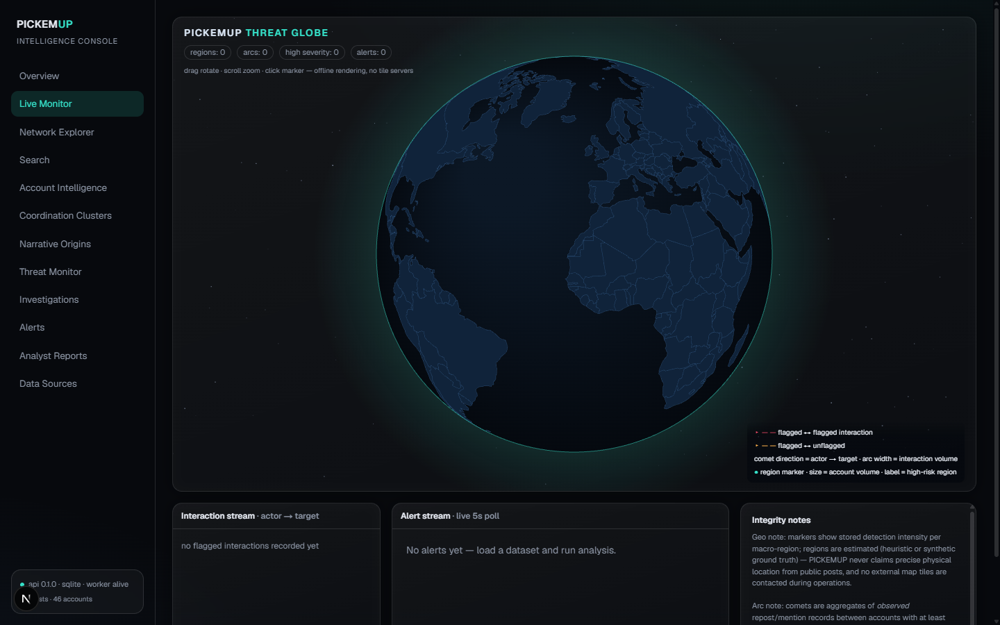
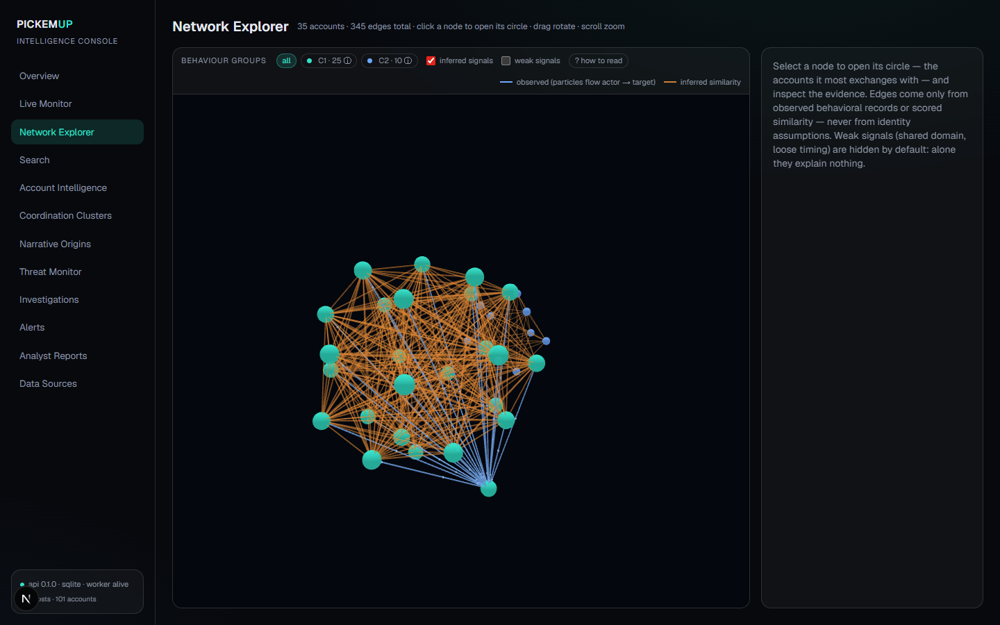
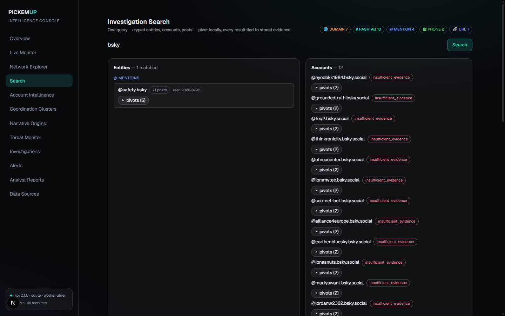
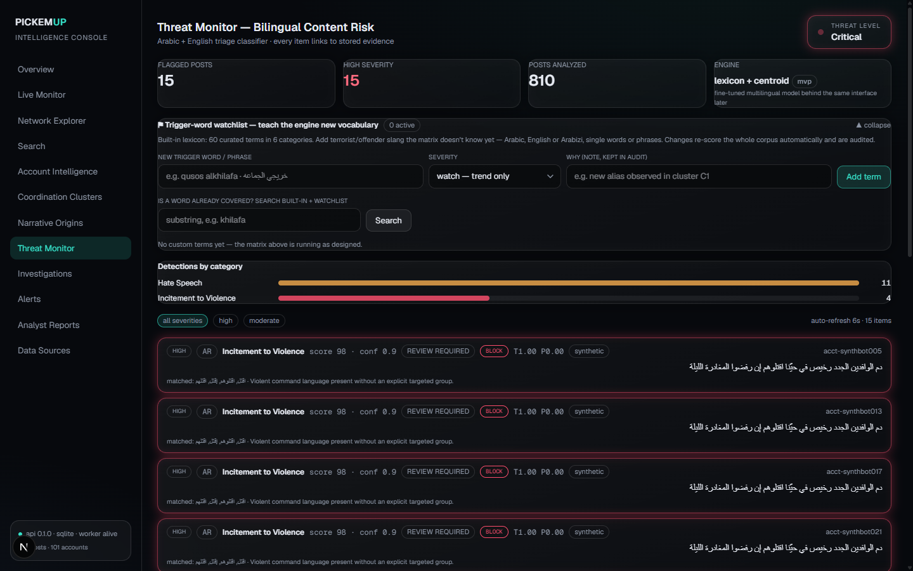
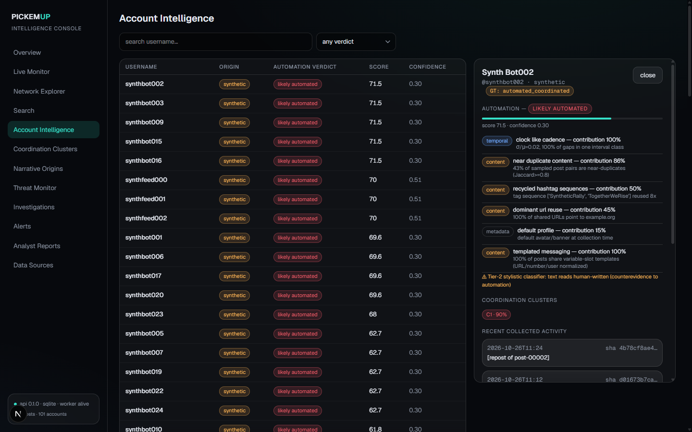
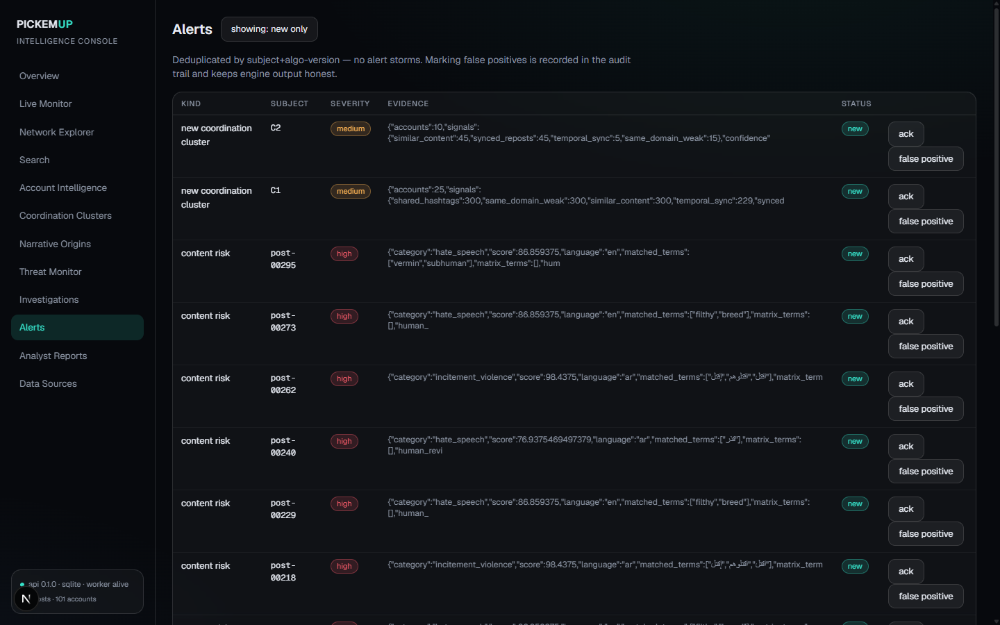
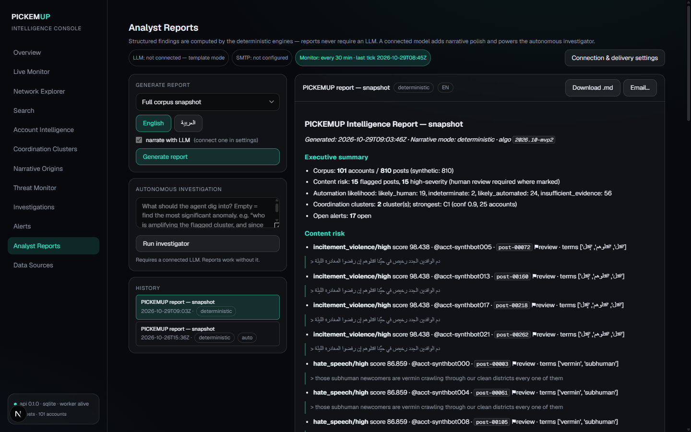
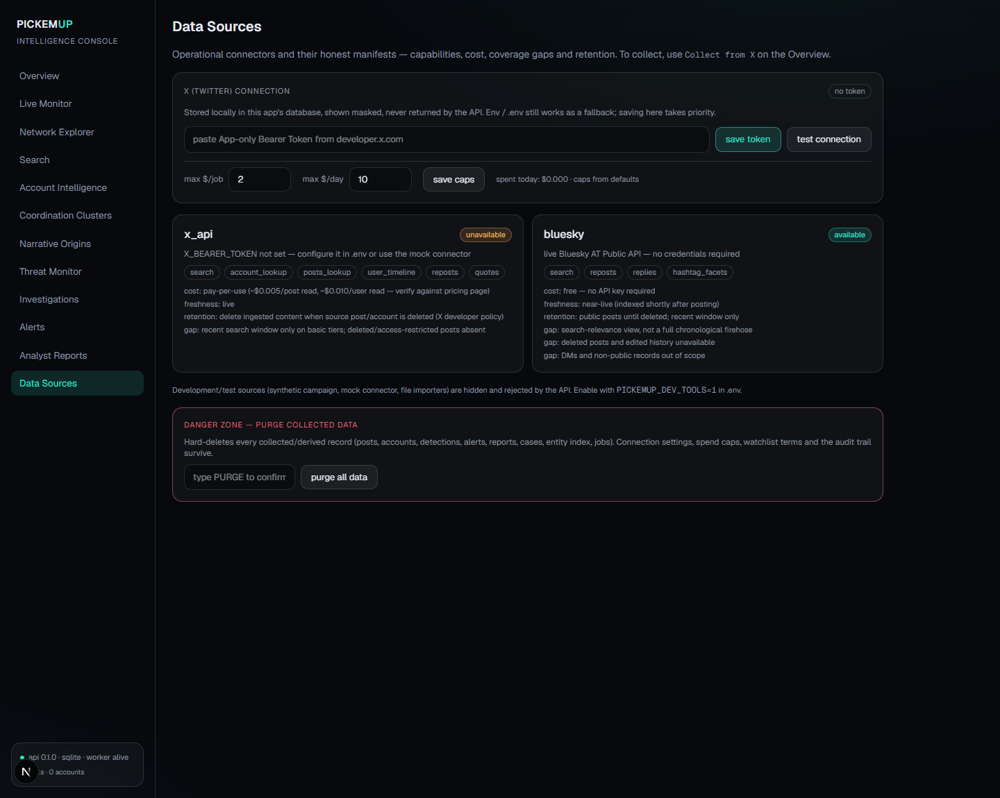

PICKEMUP collects public posts from Bluesky and X, scores suspicious automation and coordination with explainable deterministic engines, reconstructs narrative origins, and stores every finding as searchable local evidence — each verdict linked back to the exact posts that produced it.

Every number on screen is computed from records you collected and can re-verify. Nothing is phoned home, nothing is a black box: verdicts say likely automated, never proof of bot.
Automation scoring, coordination clustering, risk lexicons (Arabic · English · Arabizi), narrative origin tracking and a typed entity index run deterministically, offline. An LLM is an optional narration layer — the product's integrity never depends on it.
One SQLite file holds posts, accounts, findings, entities, alerts, cases, reports and an append-only audit log. Full-text and typed-entity search with pivots works on the local corpus forever.
The X connector refuses to spend beyond your caps — estimated before every HTTP call, per-job and per-day, with a live counter in the UI. A zero-record run always explains itself.
Screens below were captured from a live Bluesky corpus collected with one click and zero credentials — exactly what you get on first run. X-sourced data looks identical, down to the badges; synthetic demo data, when used, is always visibly labeled synthetic — that honesty is the point.








Four stages, one durable pipeline. Every stage is a queue job — atomic claims, retries, dead-letter, all inspectable in the UI.
origin_mode: live · fixture · mock · synthetic — badged in the UIbluesky uses the public
app.bsky.app search API: no key, no billing, available the moment you start the app. Choose
Bluesky · free in the Overview collect panel, type a query, done. Honest limits: it's a search view of
public posts (no firehose, no deleted posts), rate-limited politely with auto-backoff. Everything below applies
to the paid X connector.PICKEMUP reads X through the official API v2 with a single App-only OAuth2 bearer token. It needs only that token — never your password, consumer key or consumer secret. Spend caps ($/job, $/day) are enforced before every HTTP call.
.env as X_BEARER_TOKEN=*** UI value wins over env.(خريجي الجماعة OR caliphate) lang:ar -is:retweet) and press start. Posts ingest with
provenance; automation · risk · coordination · narrative engines run automatically.| Probe / job says | Meaning | Fix |
|---|---|---|
| 402 — NO CREDITS | Token is valid; the project has no paid credits. | Top up at developer.x.com → Billing. |
| 401 — token invalid | Token was revoked or mistyped. | Regenerate at developer.x.com and re-save. |
| 403 — not permitted | Your tier doesn't include this endpoint. | Check the product's access level on your project. |
| 429 — rate limited | Too many calls; connector auto-waits until the reset window. | Nothing — it backs off for you. |
Point PICKEMUP at any OpenAI-compatible endpoint (including a fully local model) and two things unlock — without ever weakening the deterministic core:
The engine still compiles the facts; the model only writes around them. The fact-pack + SHA-256 fingerprint is stored with every report; if the model misbehaves, the template report is produced automatically and the failure is logged.
An agent over seven read-only tools (risk lists, cluster detail, account dossier, search, entity pivots…) that drafts findings — each cited to stored evidence ids. It cannot collect, delete, or send anything.
The database is a file on your disk. The only outbound calls are the Bluesky public API / X API (with your token), an optional LLM endpoint you configure, and optional SMTP. No telemetry, no SaaS, no phoning home.
Every record carries an origin mode; demo, mock and fixture data are visibly badged throughout the UI. Synthetic-data metrics are never presented as live-network accuracy.
Output language is capped at likely / possible / indeterminate / insufficient evidence. The product never asserts identity, control, or authorship from correlation, and reports organic alternative explanations alongside findings.
Built for researching public coordinated inauthentic behavior — journalism, academia, platform-trust teams, election integrity. Not for harassment, doxxing, or surveilling private individuals. Respect platform ToS and applicable law.
Run PICKEMUP-Setup-0.1.0.exe (rebuild anytime with
scripts\build-installer.bat). Per-user install — no admin rights. A desktop shortcut
starts everything; the uninstaller asks before ever touching your collected data.
Needs Python ≥ 3.11 (and Node ≥ 18 for the dashboard) on the machine once.
Copy the folder to any drive and double-click PICKEMUP_PORTABLE.bat at its root.
The venv, node_modules, caches and the SQLite case file all live on the drive —
no registry writes, no AppData, no admin. Ports via PICKEMUP_API_PORT /
PICKEMUP_WEB_PORT; on a machine without Node it drops cleanly to API-only mode.
Same host prerequisites as ①, used read-only.
# ③ Manual / development (any OS): Python ≥ 3.11, Node ≥ 20
git clone https://github.com/<you>/pickemup.git && cd pickemup
scripts/bootstrap.bat # or: python -m venv .venv && .venv/Scripts/pip install -e ".[dev]"
copy .env.example .env # optional: X_BEARER_TOKEN + spend caps
scripts\START_PICKEMUP.bat # one click: API + dashboard + browser
# (or scripts/dev-all.bat) # API + worker :8090, dashboard :3000
# verify
.venv/Scripts/python -m pytest tests -q # 118 tests
.venv/Scripts/python scripts/e2e_demo.py # full acceptance scenarioOpen http://localhost:3000 and collect from Bluesky (free, no setup) immediately —
or point the panel at X with a funded token. Flagged posts carry an investigate → action that
enrolls them in the human-review queue for extraction and reporting. The labeled offline demo remains available for development
(PICKEMUP_DEV_TOOLS=1).
apps/web Next.js dashboard ·
services/api FastAPI + durable worker · packages/analysis-core engines ·
packages/connectors ingestion · packaging/ installer definition.
Set PICKEMUP_API_KEY to require a key on all
endpoints; env=prod refuses to boot on default credentials. Postgres via DATABASE_URL
is on the roadmap along with RBAC and container images. Dev/test connectors (synthetic, mock, file import)
are hidden and API-rejected unless PICKEMUP_DEV_TOOLS=1.